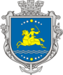
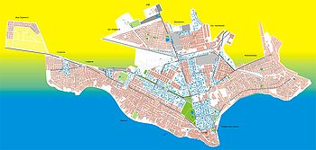
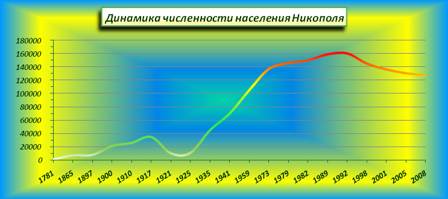

О городе
Ни́кополь (укр. Ні́кополь) — город и община в Днепропетровской области Украины. Административный центр
Никопольского района. Расположен на берегах Каховского водохранилища реки Днепр, в 105 км юго-восточнее
Кривого Рога и в 65 км юго-западнее Запорожья. Крупный промышленный центр Украины.
В феврале 1648 года на Никитинской Сечи (нынешний Парк Победы) был избран гетманом Украины Богдан
Хмельницкий. Отсюда же началось восстание Богдана Хмельницкого.
В 12 километрах западнее Никополя между сёлами Алексеевка и Капуловка находится могила легендарного
запорожского кошевого атамана Ивана Сирко, который не проиграл ни одной битвы и запечатлён на картине И. Е.
Репина «Запорожцы».
21 июня 1971 года в степях под Никополем, неподалёку от соседнего города Покров, ныне входящего в состав
Никопольской агломерации, на территории горнорудного комбината, при раскопках скифского кургана Толстая
Могила[5], была обнаружена знаменитая Золотая Пектораль, позже датированная IV веком до н. э., одна из
величайших находок мировой истории и археологии.
Расстояние до Днепра: по автодорогам — 110 км; до Киева — 511 км.

Топонимика
Существуют утверждения, что Никополь получил своё название от имени Никита, которое означает в переводе с
греческого языка «победитель» и этимологически связано с именами Николай, Никодим, Никифор, Никео. Греческое
имя Никита, которое было названием Запорожского поселения,было преобразовано в 1780 году в название будущей
крепости Никополь — Никитин город, город победителя. В буквальном же переводе с греческого языка название
Никополь означает «город победы».
Географическое положение
Никополь расположен в южной части Украины на юге Днепропетровской области на правом берегу реки Днепр. Город
расположен в степной зоне, в пределах северной и среднестепной ландшафтной подзон. Физическое расстояние от
Никополя до областного центра (г. Днепр) составляет 99 км[2], по шоссе — 108 км, прямого железнодорожного
сообщения нет (ближайший путь — 195 км через г.Запорожье).
Территория города составляет 5926 га (59,26 км²), в том числе 2030 га под жилой застройкой и 1349 га под
промышленными объектами. В административных границах города проходит электрифицированная железнодорожная
магистраль Кривой Рог — Запорожье, а также автомобильная дорога национального значения Кропивницкий — Кривой
Рог — Запорожье.
Южная часть города омывается водами Каховского водохранилища. Протяжённость речной границы — 23 км.
Никополь находится в часовом поясе, обозначаемом по международному стандарту как Eastern European Time
(Восточноевропейское время), EET (UTC+2).

Насиление
Численность населения города по состоянию на 1 ноября 2015 года составляет 117 810 постоянных жителей и 115
756 человек наличного населения.
По состоянию на 1 марта 2009 года
численность населения Никополя составляла 127,3 тыс. человек[13], что делало его четвёртым по численности
населения городом Днепропетровской области после Днепра, Кривого Рога и Каменского и 36-м из 458 городов
Украины. Население Никополя достаточно многонационально. На его территории проживают представители свыше 80
национальностей. Наибольшими из них являются украинцы (78,5 % от общего числа жителей), русские (17,6 %) и
белорусы (0,8 %). Подавляющее большинство из числа представителей остальных национальностей не превышает
показатель 0,1 % от общего количества городских жителей.
В 2008 году в Никополе наблюдался отрицательный баланс изменения населения города в результате естественного
и миграционного сокращений. За год в городе на свет появилось 1,370 новорожденных, а умерли 2,423 человека
(из них 18 детей в возрасте до 1 года). В 2008 году в городе было зарегистрировано 895 бракосочетаний и 545
разводов. Средняя продолжительность жизни в Никополе составляет 67 лет: у мужчин — 61 год, у женщин —
73[14].
На протяжении всего 2008 года город покинули 1,651 человек, из которых 764 выбыли за пределы
Днепропетровской области. Общее число прибывших на постоянное местожительство в Никополь составило 771
человек, из которых 339 прибыли из-за пределов области[15]. Общее сокращение населения города в 2008 году
составило −1,933 человека (-1,053 в результате естественного сокращения и −880 в результате миграции).
Социальная сфера
Здравоохранение
В Никополе расположены 4 городских больницы (3 взрослых и 1 детская) и 1 районная больница, 6 семейных
поликлиники, станция переливания крови, станция скорой медицинской помощи, родильный дом, женская
консультация, кожно-венерологический, противотуберкулёзный, психоневрологический диспансеры,
стоматологическая поликлиника, ветеринарная лечебница, детский санаторий. Собственную медико-санитарную
часть имеет ОАО «Никопольский завод ферросплавов», расположенную неподалёку от центральной проходной
завода, а также профилакторий, расположенный на берегу Каховского водохранилища. В городе ведётся
строительство новой детской больницы уже 5 лет. Есть медицинский центр Импульс.
Образование
В 2010 году в Никополе действовало 25 общеобразовательных школ (из них 4 учреждения повышенного статуса),
а также «Специализированная Естественно-Математическая школа при Днепровском Национальном университете
им. Олеся Гончара», где в общем обучались 12,822 учеников. В городе функционируют 26 дошкольных
образовательных учреждений общей численностью 3,811 детей, в том числе учебно-воспитательный комплекс
«Родничок» для детей с нарушениями опорно-двигательного аппарата.
Спорт
В Никополе созданы необходимые условия и широкие возможности для занятий физической культурой и спортом
для всех категорий населения. Спортивная база города насчитывает 2 стадиона, 2 спорткомпклекса, 32
спортивных зала, 23 футбольных поля, 2 стрелковых тира, яхт-клуб, 45 помещений для
физкультурно-оздоровительной работы.
С населением города в сфере физической культуры и спорта работают 133 тренера по 24 видам спорта. В
разных направлениях физкультурно-оздоровительной работы заняты более 20 тыс. человек. Ежегодно в городе
проводится более 100 спортивно-массовых мероприятий в разных возрастных категориях от 5—6 до 50—60 лет.
Наиболее популярными видами спорта в Никополе являются лёгкая атлетика, футбол, волейбол, кикбоксинг,
скалолазание, борьба дзюдо и самбо.
Крупнейшим спортивным сооружением города является большой спортивный комплекс «Электрометаллург»,
включающий стадион с одноимённым названием (вместимость составляет 7,200 зрителей), крытый
легкоатлетический манеж, три спортивных зала, два скалодрома, 7 теннисных кортов, тир, тренажёрную
площадку, два тренировочных футбольных поля (одно для мини-футбола), поле для легкоатлетических метаний и
нестандартное оборудование для общей физической подготовки. Также крупными сооружениями являются стадион
«Металлург» им. А. И. Куценко (вместимость — 12,000 зрителей) и культурно-спортивный комплекс завода
ферросплавов (КСК НЗФ).
В Советские времена в городе была футбольная команда «Колос», выступавшая в низших лигах чемпионата
СССР. В 2007 году была создана футбольная команда «ФК Никополь-Днепряне». Команду с 2009 года возглавил
заслуженный тренер Украины Григорий Варжеленко. По итогам 2008 года команда заняла 5 место в первенстве
Днепропетровской области по футболу. Все большее количество любителей футбола приходят на матчи лучшей
команды города. Президент клуба — депутат городского совета Дмитрий Бычков. В Никополе функционируют 5
детско-юношеских спортивных школ. Ежегодно в городе проводится международный турнир по юношескому футболу
«Кубок Мэрии» с участием более 400 юных футболистов из Польши, Венгрии, Молдавии, России и областных
центров Украины.
В нескольких километрах от Никополя в посёлке Чкалово функционирует, отвечающая европейскому уровню,
спортивная база «Никопольский Колос», предоставляющая все необходимые условия для проведения игр и
тренировочных матчей. Спорткомплекс включает в себя небольшой современный стадион с синтетическим
покрытием футбольного поля и пластиковыми креслами (1,500 мест), спортивный зал 36x18 метров, гостиницу
на 60 мест, тир на 10 бойниц, школу-интернат спортивного профиля, спортивно-оздоровительный комплекс,
столовую и сауну.
В 2008 году в Никополе была создана федерация карате, а в начале 2009 года открыта школа бильярда
«Арктика-Премьер», входящая в тройку лучших бильярдных клубов Украины.
Факты
- В 2004 году французский кинорежиссёр Энки Билал в своём блокбастере «Бессмертные: Война миров»
присвоил одному из главных героев фильма Томасу Кречманну имя Никопол. В интервью журналистам режиссёр
заявил о взятом имени по названию украинского города Никополь
- Одна из улиц Краматорска (Донецкая область) и одна из улиц Челябинска (Россия, Южный Урал) носят
название города. Также в Киеве, Днепре, Кропивницком, Марганце и Черновцах есть улица Никопольская. В
Запорожье в честь Никополя назван переулок
- В Южном административном округе Москвы (район Западное Бирюлёво) есть улицы под названиями
Никопольская и 3-я Никопольская